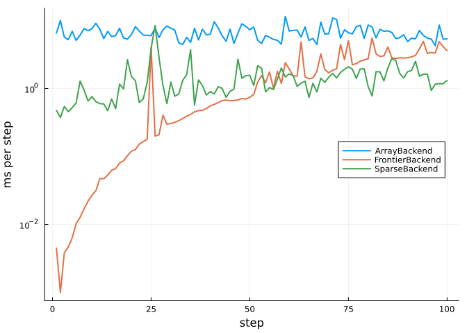

Writing a backend
Simon Frost
- Overview
- The interface
- The simplest backend
- Visiting only the cells that can change
- Wrapping a backend
- Testing a backend
Overview
A backend decides where the state of a cellular automaton lives and how its cells are visited; the model itself, the rule, space, parameters and update scheme, says nothing about either. The backends that come with the package (arrays, tiles, GPUs, Agents.jl models, Ark.jl worlds) are written against a small public interface, and so can a new one, in a package of its own or in a script. Once written, a backend runs every problem it accepts through solve, init and step!, with callbacks, remake and ensembles, without further work.
This vignette writes three backends: the simplest one that works, one that saves work by visiting only the cells that can change, and one that wraps another backend to time it.
ENV["GKSwstype"] = "100"
using CellularAutomataCore
using Plots
using Random
using StatisticsThe interface
A backend is a subtype of AbstractBackend with methods of eight functions. supports, read_cell and write_cell! are exported; the others are public but not exported, as their names are generic, so they are imported to be extended:
| function | what it does |
|---|---|
supports(backend, scheme) | whether the backend runs an update scheme |
check_problem(backend, prob, scheme) | raise an error if it cannot run a problem |
allocate_state(backend, prob, scheme) | create its state, holding prob.u0 |
advance!(backend, state, prob, scheme, p, t) | one step, from t to t + 1 |
current_state(backend, state) | a copy of the state, in the layout of u0 |
set_state!(backend, state, u) | replace the state |
read_cell(backend, state, I), write_cell!(backend, state, I, v) | one cell |
Plots.jl also exports a name AbstractBackend, for its own plotting backends, so with both packages loaded the supertype is imported explicitly too:
import CellularAutomataCore: AbstractBackend, supports, check_problem, allocate_state,
advance!, current_state, set_state!, read_cell, write_cell!
using CellularAutomataCore: update_cellA backend that runs its own engine needs to apply the rule to one cell. update_cell(prob, u, I, t, p) returns the new state of cell I when the state u is updated at time t: it reads the neighbours with the boundary conditions of the space, passes the covariates and parameters, respects the mask, and draws the same random numbers every other backend draws.
The simplest backend
The simplest backend keeps the state in two arrays, computes every cell’s new state from the first into the second, and swaps them. It runs the Synchronous scheme only.
struct LoopBackend <: AbstractBackend end
mutable struct LoopState{U}
cur::U
next::U
end
supports(::LoopBackend, ::Synchronous) = true
allocate_state(::LoopBackend, prob, scheme) = LoopState(copy(prob.u0), copy(prob.u0))
function advance!(::LoopBackend, st::LoopState, prob, scheme, p, t)
for I in cells(prob.space)
st.next[I] = update_cell(prob, st.cur, I, t, p)
end
st.cur, st.next = st.next, st.cur
return nothing
end
current_state(::LoopBackend, st::LoopState) = copy(st.cur)
set_state!(::LoopBackend, st::LoopState, u) = (copyto!(st.cur, u); nothing)
read_cell(::LoopBackend, st::LoopState, I) = st.cur[I]
write_cell!(::LoopBackend, st::LoopState, I, v) = (st.cur[I] = v; nothing)That is the whole backend. A stochastic epidemic, with susceptible (0), infected (1) and recovered (2) plants, gives exactly the result of the default ArrayBackend:
sir = LocalRule(Moore(1)) do cell, nbrs, ctx
if cell == 0
k = count(==(1), nbrs)
return bernoulli(ctx, 1 - (1 - ctx.p.β)^k, 1) ? Int8(1) : Int8(0)
elseif cell == 1
return bernoulli(ctx, ctx.p.γ, 2) ? Int8(2) : Int8(1)
end
return cell
end
u0 = zeros(Int8, 60, 60)
u0[30, 30] = 1
prob = CAProblem(sir, u0, 40, (β=0.2, γ=0.1); seed=1)
solve(prob; backend=LoopBackend()).u == solve(prob).utrueThe results agree, and not just in distribution, because a rule’s random numbers are a function of the seed, the cell, the time and the draw number (see uniform), not of the order in which a backend happens to visit the cells. Everything else in the package works on the new backend: here a callback removes the infected plants in a block on day 10, and an ensemble of runs gives each its own seed.
function cull!(integ)
block = view(integ.u, 25:35, 25:35)
block[block .== 1] .= 2
return nothing
end
culled = solve(prob; backend=LoopBackend(), callback=PresetTimeCallback([10], cull!))
same = culled.u == solve(prob; callback=PresetTimeCallback([10], cull!)).u
ens = EnsembleProblem(prob; output_func=(sol, ctx) -> (count(>(0), final_state(sol)), false))
runs = solve(ens, Synchronous(), EnsembleThreads(); trajectories=20, backend=LoopBackend(),
save_everystep=false)
(same_as_array_backend=same, plants_ever_infected=extrema(runs.u))(same_as_array_backend = true, plants_ever_infected = (1983, 2587))A scheme the backend does not support is refused when the problem is set up:
try
solve(prob, Stochastic(0.5); backend=LoopBackend())
catch err
err
endUnsupportedCombinationError("Main.Notebook.LoopBackend()", "CellularAutomataCore.Stochastic{Float64}(0.5)")Visiting only the cells that can change
In a large field with a small epidemic, almost every cell is susceptible and surrounded by susceptible cells, and stays so. LoopBackend and ArrayBackend update them anyway. A backend can instead keep the list of active cells, those not in a background state, and on each step update only those and the cells within reach of them: the cells whose neighbourhood contains an active cell.
Skipping a cell is only correct if the rule leaves a background cell with an all-background neighbourhood unchanged; such a rule is called quiescent. An epidemic without infection from outside is; a forest-fire model with lightning is not. check_problem tests a sample of cells and times with update_cell, so that a problem the backend would get wrong is refused before it runs. The backend runs on a torus, where the cells within reach wrap around the edges.
struct FrontierBackend{T} <: AbstractBackend
background::T
end
mutable struct FrontierState{U,N}
u::U # the state of record
active::Vector{CartesianIndex{N}} # cells not in the background state
reach::Vector{CartesianIndex{N}} # offsets from an active cell to the cells it affects
end
supports(::FrontierBackend, ::Synchronous) = true
function check_problem(b::FrontierBackend, prob, scheme)
space = prob.space
space isa Lattice && all(x -> x isa Periodic, boundaries(space)) ||
throw(ArgumentError("FrontierBackend runs on a torus"))
quiet = fill(b.background, size(space))
t0 = first(prob.tspan)
for I in Iterators.take(cells(space), 50), t in t0:(t0 + 3)
update_cell(prob, quiet, I, t) == b.background ||
throw(ArgumentError("FrontierBackend needs a quiescent rule: cell $I left the background at t = $t"))
end
return nothing
end
function allocate_state(b::FrontierBackend, prob, scheme)
nbhd = something(neighbourhood(prob.rule), default_neighbourhood(prob.space))
offsets = collect(neighbourhood_offsets(nbhd, prob.space))
reach = unique([zero(first(offsets)); -offsets])
st = FrontierState(copy(prob.u0), CartesianIndex{ndims(prob.u0)}[], reach)
find_active!(b, st)
return st
end
function find_active!(b::FrontierBackend, st::FrontierState)
st.active = [I for I in CartesianIndices(st.u) if st.u[I] != b.background]
return nothing
end
wrap(I, dims) = CartesianIndex(mod1.(Tuple(I), dims))
function advance!(b::FrontierBackend, st::FrontierState, prob, scheme, p, t)
dims = size(st.u)
candidates = Set(wrap(I + r, dims) for I in st.active for r in st.reach)
# every new state is computed from the old ones before any is written
new = [(I, update_cell(prob, st.u, I, t, p)) for I in candidates]
for (I, v) in new
st.u[I] = v
end
st.active = [I for (I, v) in new if v != b.background]
return nothing
end
current_state(::FrontierBackend, st::FrontierState) = copy(st.u)
function set_state!(b::FrontierBackend, st::FrontierState, u)
copyto!(st.u, u)
find_active!(b, st)
return nothing
end
read_cell(::FrontierBackend, st::FrontierState, I) = st.u[I]
function write_cell!(b::FrontierBackend, st::FrontierState, I, v)
st.u[I] = v
v != b.background && push!(st.active, CartesianIndex(I))
return nothing
endOn the same epidemic, the frontier backend agrees with the others:
solve(prob; backend=FrontierBackend(Int8(0))).u == solve(prob).utrueand a rule that is not quiescent is refused:
sparks = LocalRule(Moore(1)) do cell, nbrs, ctx
return cell == 0 && bernoulli(ctx, 0.001) ? Int8(1) : cell
end
try
solve(CAProblem(sparks, u0, 10); backend=FrontierBackend(Int8(0)))
catch err
err
endArgumentError("FrontierBackend needs a quiescent rule: cell CartesianIndex(2, 1) left the background at t = 1")The saving grows with the size of the field. Here is the time per step for an epidemic started from one plant, on fields of 200 × 200 and 1000 × 1000 plants, with ArrayBackend, the frontier backend and the package’s own SparseBackend, which stores the active part of the field in tiles:
function ms_per_step(prob, backend)
solve(prob; backend, save_everystep=false) # compile
return 1000 * minimum(@elapsed(solve(prob; backend, save_everystep=false))
for _ in 1:3) / prob.tspan[2]
end
timings = map((200, 1000)) do n
start = zeros(Int8, n, n)
start[n ÷ 2, n ÷ 2] = 1
big = CAProblem(sir, start, 60, (β=0.2, γ=0.1); seed=1)
final = final_state(solve(big; save_everystep=false))
@assert final == final_state(solve(big; backend=FrontierBackend(Int8(0)),
save_everystep=false))
(field="$n × $n", infected=count(>(0), final),
array=round(ms_per_step(big, ArrayBackend()); digits=2),
frontier=round(ms_per_step(big, FrontierBackend(Int8(0))); digits=2),
sparse=round(ms_per_step(big, SparseBackend(Int8(0))); digits=2))
end((field = "200 × 200", infected = 5583, array = 0.68, frontier = 0.56, sparse = 0.94), (field = "1000 × 1000", infected = 5008, array = 5.69, frontier = 0.46, sparse = 0.85))On both fields the epidemic reaches about the same few thousand plants, so the cost of the frontier and sparse backends hardly changes between them, while that of ArrayBackend grows with the area of the field: on the large one it is about ten times slower. The exact times vary from run to run.
Wrapping a backend
A backend can also delegate to another. This one records how long each step of the backend it wraps takes, and passes every other call through unchanged.
struct TimedBackend{B<:AbstractBackend} <: AbstractBackend
inner::B
seconds::Vector{Float64}
end
TimedBackend(inner) = TimedBackend(inner, Float64[])
supports(b::TimedBackend, scheme::AbstractScheme) = supports(b.inner, scheme)
check_problem(b::TimedBackend, prob, scheme) = check_problem(b.inner, prob, scheme)
allocate_state(b::TimedBackend, prob, scheme) = allocate_state(b.inner, prob, scheme)
function advance!(b::TimedBackend, st, prob, scheme, p, t)
push!(b.seconds, @elapsed advance!(b.inner, st, prob, scheme, p, t))
return nothing
end
current_state(b::TimedBackend, st) = current_state(b.inner, st)
set_state!(b::TimedBackend, st, u) = set_state!(b.inner, st, u)
read_cell(b::TimedBackend, st, I) = read_cell(b.inner, st, I)
write_cell!(b::TimedBackend, st, I, v) = write_cell!(b.inner, st, I, v)Timing every step on the large field, for longer, shows how the cost of each backend changes as the epidemic grows:
start = zeros(Int8, 1000, 1000)
start[500, 500] = 1
big = CAProblem(sir, start, 100, (β=0.2, γ=0.1); seed=1)
timed = [name => TimedBackend(b)
for (name, b) in ("ArrayBackend" => ArrayBackend(),
"FrontierBackend" => FrontierBackend(Int8(0)),
"SparseBackend" => SparseBackend(Int8(0)))]
for (name, b) in timed
solve(big; backend=b, save_everystep=false) # compile, then time a fresh run
empty!(b.seconds)
solve(big; backend=b, save_everystep=false)
end
plot(; xlabel="step", ylabel="ms per step", yscale=:log10, legend=:right)
for (name, b) in timed
plot!(1:length(b.seconds), 1000 .* b.seconds; label=name, lw=2)
end
current()
ArrayBackend costs the same at every step, whatever the epidemic does. The frontier backend starts almost free, with a single infected plant, and its cost then grows with every plant the epidemic reaches: recovered plants are not in the background state, so they stay in its active list. SparseBackend costs more at first, as it updates whole tiles, but it updates them with the array engine, which is cheaper per cell than a Set and a call to update_cell. Once the epidemic has reached a few thousand plants it is the faster of the two. The isolated spikes are garbage collection.
Testing a backend
A backend is correct when it gives exactly the result of the slow, simple ReferenceBackend on every problem it accepts. The package’s own backends are held to that on a battery of problems covering every space, boundary condition, neighbourhood, state layout, rule family and update scheme; a new backend can be checked the same way, skipping the problems it refuses:
problems = [CAProblem(Life(), Int8.(rand(Xoshiro(1), 0:1, 30, 30)), 20),
CAProblem(Life(), Int8.(rand(Xoshiro(2), 0:1, 20, 24)), 20;
space=Grid(20, 24; boundary=Constant(0))),
CAProblem(Life("B2/S34"), Int8.(rand(Xoshiro(3), 0:1, 14, 16)), 20;
space=HexGrid(14, 16)),
prob]
function runs_and_agrees(backend, prob)
try
check_problem(backend, prob, Synchronous())
catch
return :refused
end
return solve(prob; backend).u == solve(prob; backend=ReferenceBackend()).u
end
[(loop=runs_and_agrees(LoopBackend(), q), frontier=runs_and_agrees(FrontierBackend(Int8(0)), q))
for q in problems]4-element Vector{NamedTuple{(:loop, :frontier)}}:
(loop = true, frontier = true)
(loop = true, frontier = :refused)
(loop = true, frontier = true)
(loop = true, frontier = true)The frontier backend refuses Life on a bounded grid, which is not a torus, and agrees wherever it runs, including the hexagonal torus: there too a neighbourhood is a list of offsets, which wrap around the edges in the same way. The loop backend runs and agrees everywhere, because update_cell handles every space and boundary condition.